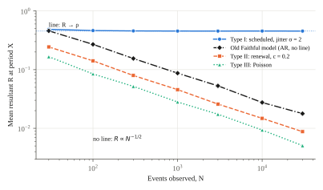
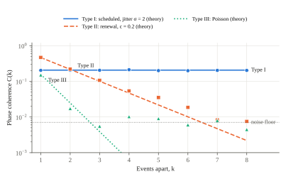
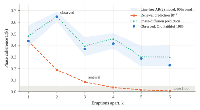

SNVRKOTICS LLC — New York, USA
Phase, Memory and Waiting in “Every X Minutes” Claims
October 3, 2026 • v1.0
Abstract. A claim that an event happens “every X minutes” seems to need two numbers, an interval and the minute it starts, yet only the first is ever given. We show that this paradox has an exact answer, and that it hides two quantities such claims always leave out. First, the start minute exists exactly when the process has a spectral line at frequency 1/X, an atom in its Bartlett spectrum (Theorem 1). When it exists, the minute belongs to each realization: it is uniformly distributed across realizations, recoverable from event times with a closed-form standard error, and impossible to state in any summary of the process’s law. Poisson, renewal and pooled processes have no line, so they have no start minute. Second, we define phase memory, the number of events over which a schedule stays predictable. It is the interval noise spectrum seen through a Fejér filter, equals 1/(2π2F) for the long-run Fano factor F, and never fades exactly when the intervals are a schedule plus stationary errors (Theorem 3). Phase memory has a practical cost: applied to a process with memory but no line, the standard Rayleigh test for periodicity rejects at rate α1/τ instead of α, where τ ≈ 2ℓ when memory is long. We give a corrected test. Old Faithful’s 1985 record shows all of this at once. Its intervals alternate (lag-1 correlation −0.70; renewal rejected, p < 10−4). It keeps time 2.6 times more precisely over two eruptions than over one (95% CI 2.2–3.0), because the two-interval filter cancels the alternation, much as a spin echo does. It remembers its phase for about five eruptions (95% CI 2.3–6.4), against the 1.4 a renewal model predicts. An apparent periodicity across the whole record (naive p = 0.007) vanishes once memory is accounted for (p = 0.46). A century of British coal-mining disasters shows the opposite type: no phase, no memory, and a mean wait three times the naive one. For any stationary process, the mean wait from a random moment is (X/2)(1 + c2), and a clock’s phase memory is bounded by the entropy it produces per tick: ℓ ≤ Δs/4π2. Every “every X” claim should come with two more numbers: its coefficient of variation and its phase memory.
Suggested citation: SNVRK (Caleb Gottfried). (October 3, 2026). The Missing Minute: Phase, Memory and Waiting in “Every X Minutes” Claims. SNVRKOTICS LLC — New York, USA. v1.0. github.com/snvrk/missing-minute.
Corresponding author: Caleb Gottfried <science@snvrkotics.com> | ORCID: 0009-0000-1948-412X
License: W2FPL 1.0
Keywords: point processes; Bartlett spectrum; phase estimation; circular statistics; Rayleigh test; phase diffusion; renewal theory; Palm calculus; thermodynamic uncertainty relation; Old Faithful
“A baby is born every few seconds.” “Someone is diagnosed every few minutes.” “Old Faithful erupts every hour and a half.” The form is everywhere because it turns an abstract total into something a reader can feel happening. The U.S. Census Bureau’s population clock, for example, expresses births, deaths and net migration each as one event every so many seconds (U.S. Census Bureau 2026). The form also invites a question that is almost never asked. A train that leaves every ten minutes leaves at particular minutes, say :03, :13 and :23, so its timetable needs an interval and an offset. A statistic that gives the interval alone is, read literally, half a timetable. We call the missing half the phase, and the impossibility of checking the claim without it the phase problem.
The phase problem looks like a quibble about wording. We argue that it opens onto two quantities that “every X” claims systematically leave out, each of which changes what a reader should expect: whether the next event can be predicted at all, and how long they will wait for it. The paper makes six contributions.
Section 2 reviews related work and Section 3 states the paradox. Sections 4 to 7 develop the theory, and Section 8 tests it by simulation. Sections 9 and 10 apply it to Old Faithful and to coal-mining disasters. Section 11 places phase memory alongside dephasing, oscillator noise and nonequilibrium thermodynamics, and Section 12 turns the results into guidance for writing such claims. Proofs are in Appendix A and simulation designs in Appendix B.
The ingredients are old; what is new is putting them together around a question of statistical communication. Spectral analysis of point processes begins with Bartlett (1963) and is developed in Daley and Vere-Jones (2003). The serial-correlation structure of interval sequences, including the long-run Fano factor F = c2(1 + 2Σrj), is classical (Cox and Lewis 1966). The neural-coding literature has shown that negatively correlated interspike intervals reduce long-run spike-count variability and improve coding (Chacron et al. 2001); our Old Faithful finding is the same phenomenon in a geyser. Phase diffusion is the standard description of noisy oscillators (Demir et al. 2000; Pikovsky et al. 2001). Its discrete counterpart, the variance of accumulated timing error, is the quantity behind the Allan variance of clock metrology (Allan 1966). The dephasing of a qubit under Gaussian noise obeys the same exponential law as our Proposition 3, written with filter functions (Cywiński et al. 2008); echo sequences suppress low-frequency noise by shaping those filters (Hahn 1950). Periodicity searches in event data use the Rayleigh test and its relatives (Leahy et al. 1983; Buccheri et al. 1983; Lord Rayleigh 1880; Fisher 1993). In X-ray timing, power is routinely normalized to the local continuum, including the continuum created by detector dead time (van der Klis 1989; Zhang et al. 1995). Our corrected Rayleigh test is the event-domain form of that practice. The inspection paradox (Feller 1971; Ross 2014) and its Palm-calculus form (Baccelli and Brémaud 2003) give the waiting law. The thermodynamic uncertainty relation (Barato and Seifert 2015; Gingrich et al. 2016) and its application to Brownian clocks (Barato and Seifert 2016) give the cost bound. We are not aware of earlier work that uses these tools to say when an “every X” claim has a start minute, how long its schedule can be trusted, or why a famous geyser keeps better time in pairs.
Let S be the statement “an event occurs every X minutes.” Its literal reading is a strictly periodic point process,
with phase φ ∈ [0, X). Checking S means checking event times against Eq. (1). That requires φ, and S withholds it:
A statement whose literal content is a timetable cannot be compared with any timetable, because half of the timetable is withheld. It sounds falsifiable, but as phrased it can’t be checked.
Three readings of S are possible. Under the periodic reading, the phase is real but unstated. Under the rate reading, X = T/N is a reciprocal average over a window, with no claim of regularity. Under the aggregate reading, events come from many independent sources (people, places, institutions) pooled into one count. We show that the paradox dissolves under all three, and that what remains is more interesting than the paradox.
Let N be a stationary point process on ℝ with intensity λ and finite second moments, and write ω = 2π/X. Its Bartlett spectrum Γ is the measure for which Var ∫f dN = ∫|f̃(u)|2 Γ(du), where f̃(u) = ∫eiutf(t)dt (Daley and Vere-Jones 2003; Bartlett 1963). Like any spectrum, Γ splits into lines (atoms) and a continuum. Define the empirical first Fourier coefficient at period X,
Theorem 1 (existence). As T → ∞, ĉ1(T) converges in mean square to a random variable c1 with E|c1|2 = Γ({ω}). Hence a start minute φ = (X/2π) arg c1 exists with positive probability if and only if the Bartlett spectrum has a line at ω; otherwise c1 = 0 almost surely. When the line exists, the law of φ is uniform on [0, X).
The last sentence is the exact resolution of the paradox. Shifting time by s multiplies c1 by e−iωs. For a stationary process this leaves the law unchanged, so the law of the phase must be invariant under rotation, which means uniform. The start minute, when it exists, is a fact about the realization, not about the law. A statistic summarizes the law. So the statistic cannot say what minute, not because someone forgot to report it, but because the minute is not a property of what the statistic describes. It can, however, be read off the events themselves.
Corollary 1. (a) A Poisson process has Γ(du) = (λ/2π)du, so it has no line and no phase. (b) A stationary renewal process whose interval distribution is spread out has no line away from the origin (Daley and Vere-Jones 2003), and hence no phase. (c) For independent processes, Bartlett spectra add, so pooling cannot create a line. If n independent schedules of equal rate each have resultant ρ at period X, their superposition has ER2 = ρ2/n: the line is diluted by √n and vanishes in the Palm–Khintchine limit (Cox and Isham 1980; Khintchine 1960). (d) A schedule with independent errors, tk = φ + kX + εk with uniform φ, has a line of mass λ2|Eeiωε|2 at ω.
Corollary 1 settles the aggregate reading. For pooled statistics such as “someone, somewhere, every X minutes,” the question “starting at which minute?” has no answer, because no realization singles out any minute. It also settles the rate reading, since X = T/N contains no clock times at all. The periodic reading remains. If a phase exists, can an observer find it? Map each event time to an angle θk = ωtk mod 2π and form the mean resultant
so that R = X|ĉ1| up to the ratio of N/T to 1/X. This is the mean resultant of circular statistics (Mardia and Jupp 2000; Fisher 1993) and the basis of pulsar timing, where the arrival phase of the first recorded photon is likewise unknown (Leahy et al. 1983; Buccheri et al. 1983). Let ρ = E[cos(θ − ωφ)] be the population concentration and ρ2 = E[cos 2(θ − ωφ)].
Theorem 2 (recovery). For N independent event phases with ρ > 0, φ̂ is consistent, with asymptotic standard error
The Rayleigh statistic Z = 2NR2 is approximately χ2 with two degrees of freedom when ρ = 0, and noncentral χ2 with noncentrality 2Nρ2 otherwise. Detecting the phase at α = 0.05 with 80% power therefore requires about
Two cases cover most applications. A schedule with independent Gaussian timing errors of standard deviation σ has ρ = exp(−2π2σ2/X2) and ρ2 = ρ4. A Poisson process whose rate is modulated as λ0[1 + κ cos(ωt − ωφ)] has ρ = κ/2 and ρ2 = 0. The paradox is therefore resolved in both directions. If the process has a line, the phase is not missing: it is an output of the data, not an input the claimant must supply. If it has no line, the phase does not exist. Theorem 2 assumes independent event phases. Section 6 shows what happens to the test, and how to repair it, when phases are dependent.
Theorem 1 asks whether a process has a phase over all time. A sharper practical question is local: if I know when one event happened, how well can I predict the phase of an event k events later? Define the phase coherence at lag k,
where E0 is expectation under the Palm (event-stationary) distribution. In practice C(k) is estimated by averaging over all pairs of events k apart. C(k) = 1 means the event k steps ahead falls at a perfectly predictable phase; C(k) ≈ 0 means its phase is uniformly uncertain. Write Sk = tj+k − tj for the time spanned by k consecutive intervals, so that C(k) = |E0eiωSk| is the modulus of its characteristic function at ω. Let fI(ν) on [−π, π] be the spectral density of the interval sequence, so that its autocovariances are ∫eijνfI(ν)dν.
Proposition 3 (phase diffusion). The span variance is the interval spectrum seen through a Fejér filter,
and if Sk is approximately Gaussian,
Growth of Var(Sk) therefore defines three types. Type I (scheduled): events are a fixed schedule plus independent errors; Var(Sk) = 2σ2 for every k ≥ 1, so C(k) = ρ2 is constant and memory never fades. Type II (renewal): intervals are independent with variance s2; Var(Sk) = ks2 and, exactly, C(k) = |ψ(ω)|k, where ψ is the interval characteristic function, so memory fades geometrically. Type III (pooled): in the Poisson limit |ψ(ω)| = (1 + 4π2)−1/2 ≈ 0.157, so memory is gone after one event. In general Var(Sk) ~ kD, with long-run diffusion D = 2πfI(0) = s2(1 + 2Σj≥1rj), where the rj are the interval autocorrelations. The phase memory length, the number of events over which coherence falls by a factor of e, is
where F = D/X2 is the long-run Fano factor of the counting process (Cox and Lewis 1966).
Equations (7) and (9) carry the paper’s central intuition. Two processes can share the same X and the same interval variability s, yet have very different memory, because memory depends on whether consecutive intervals compensate one another (r1 < 0, a long gap tends to follow a short one) or compound (r1 > 0). A renewal model, which assumes every rj = 0, can be wrong about predictability in either direction even when it fits the interval distribution perfectly. The filter makes the mechanism visible. Compensating intervals put their variance near ν = π, the alternation frequency. For even k, Fk(π) = 0, so spans of an even number of intervals cancel the alternation; for odd k, Fk(π) = 1, so they keep it. A process with strongly alternating intervals should therefore keep better time over two events than over one, and its coherence should zigzag between even and odd lags. Section 9 finds exactly this in Old Faithful. The same arithmetic underlies the Hahn echo, in which a pulse halfway through a sequence of free evolutions cancels slow noise (Hahn 1950); Old Faithful performs a natural echo every second eruption.
When does memory never fade? Proposition 3 suggests the answer, and Theorem 3 makes it exact.
Theorem 3 (memory dichotomy). Let the intervals be stationary under the Palm distribution, with mean X and finite variance. (i) supk Var(Sk) < ∞ if and only if tj = t0 + jX + εj − ε0 for some stationary sequence (εj) with finite variance; that is, if and only if the process is a schedule plus stationary errors. (ii) In that case, if (εj) is mixing, C(k) → |Eeiωε0|2 as k → ∞, and memory never fades. (iii) For a renewal process, C(k) = |ψ(ω)|k → 0, unless every interval equals a fixed constant plus a multiple of X. (iv) More generally, if Var(Sk) → ∞ and Eq. (8) holds, then C(k) → 0.
Part (i) is a theorem about coboundaries of unitary operators (Browder 1958; Lin and Sine 1983), here read as a statement about clocks. A process keeps time forever only if each event’s error is measured against a fixed timetable rather than against the previous event. Every other process forgets, and ℓ says how fast.
The Rayleigh test of Theorem 2 assumes independent phases. Phase memory violates that assumption without creating a line. Nearby events then sit at nearby phases, which makes R larger than chance, and the test mistakes memory for a phase.
Proposition 4 (Rayleigh test under phase memory). Let N be stationary with no line at ω, and let its Bartlett spectrum have a density γ continuous at ω. Then E|Σtk≤T eiωtk|2 / EN(0, T] → τ = 2πγ(ω)/λ. In event time, when the series converges absolutely,
which equals Re[(1 + ψ)/(1 − ψ)] for a renewal process, 1 for a Poisson process, and coth(1/2ℓ) ≈ 2ℓ under Gaussian phase diffusion. If a central limit theorem holds for N, then Z/τ → χ22, so a naive Rayleigh test at level α rejects with probability tending to α1/τ.
We estimate τ by truncating Eq. (10) at lag L = N/10, with the expectations replaced by averages over event pairs and X by T/N. The corrected p-value is exp(−Z/2τ̂), which equals pnaive1/τ̂. Proposition 4 is the point-process counterpart of normalizing a periodogram by its local continuum, as X-ray astronomers do for red noise and dead time (van der Klis 1989; Zhang et al. 1995). What the phase-memory view adds is the event-domain estimator and the identity τ ≈ 2ℓ: a test with N events has an effective sample size of about N/2ℓ. A renewal process with c = 0.2 has τ ≈ 2.7, so a naive test on such a process, which has no phase at all, reports one at the 5% level about a third of the time (Section 8).
A reader told that something happens every 10 minutes, arriving at a random moment, expects to wait about 5. That expectation is right only for a perfect schedule. The general answer is the inspection paradox: a random moment is more likely to land in a long interval than in a short one (Feller 1971; Ross 2014).
Proposition 5 (waiting law). For any stationary, ergodic, simple point process whose Palm interval distribution has mean X and coefficient of variation c, the mean wait from a random moment to the next event, and the mean length of the interval containing that moment, are
For renewal processes this is textbook material, and for stationary processes in general it follows from the Palm inversion formula (Daley and Vere-Jones 2003; Baccelli and Brémaud 2003). We state it because its generality is what makes it usable. It holds for scheduled processes with jitter, for processes with correlated intervals such as Old Faithful, and, by time averaging, for cyclostationary ones. We call 1 + c2 the inspection multiplier: the factor by which the true mean wait exceeds the naive X/2.
All simulations use fixed seeds and are reproduced by the code accompanying this paper (Appendix B). Table 1 compares four processes that all average “one every 10 minutes” over 100,000 minutes.
| Process | Events | T/N | c | R at X | p | Mean wait | Straddle | (X/2)(1+c2) |
|---|---|---|---|---|---|---|---|---|
| A. Periodic, unknown phase | 10,000 | 10.00 | 0.00 | 1.000 | < 10−300 | 5.01 | 10.00 | 5.00 |
| B. Poisson | 10,014 | 9.99 | 1.00 | 0.019 | 0.031 | 9.96 | 19.92 | 9.95 |
| C. Pooled, 50 periodic sources | 9,919 | 10.08 | 1.00 | 0.003 | 0.93 | 10.02 | 20.10 | 10.04 |
| D. Poisson with daily cycle | 9,926 | 10.07 | 1.12 | 0.009 | 0.44 | 11.36 | 22.77 | 11.37 |
Table 1. Four processes that all happen “every 10 minutes” (minutes throughout). The undisclosed phase of A was recovered to within 10−9 minutes.
Three results stand out. The rate is recovered in every case. A phase is found only where Theorem 1 says one exists. The nominally significant p = 0.031 for the Poisson process is the 1-in-20 false positive expected at α = 0.05, and its concentration, R = 0.019, is negligible: a reminder that a single marginal test establishes nothing (Wasserstein and Lazar 2016). (For a Poisson process τ = 1, so no correction applies.) And the waiting law predicts every row, including D, which is cyclostationary rather than stationary.
Table 2 compares the standard error predicted by Eq. (4) with the spread of 400 replicate estimates for each design.
| Design | N | ρ (theory) | R (mean) | SE, simulated | SE, Eq. (4) | 2Nρ2 |
|---|---|---|---|---|---|---|
| Schedule, jitter σ = 1 | 100 | 0.821 | 0.821 | 0.101 | 0.101 | 135 |
| Schedule, jitter σ = 1 | 1,000 | 0.821 | 0.821 | 0.030 | 0.032 | 1,348 |
| Schedule, jitter σ = 2 | 100 | 0.454 | 0.460 | 0.235 | 0.243 | 41 |
| Schedule, jitter σ = 2 | 1,000 | 0.454 | 0.456 | 0.075 | 0.077 | 412 |
| Schedule, jitter σ = 3 | 100 | 0.169 | 0.185 | 0.769 | 0.665 | 6 |
| Schedule, jitter σ = 3 | 1,000 | 0.169 | 0.172 | 0.200 | 0.210 | 57 |
| Modulated Poisson, κ = 1 | 100 | 0.500 | 0.507 | 0.223 | 0.225 | 50 |
| Modulated Poisson, κ = 1 | 1,000 | 0.500 | 0.502 | 0.071 | 0.071 | 500 |
| Modulated Poisson, κ = 0.5 | 100 | 0.250 | 0.254 | 0.451 | 0.450 | 13 |
| Modulated Poisson, κ = 0.5 | 1,000 | 0.250 | 0.251 | 0.128 | 0.142 | 125 |
| Modulated Poisson, κ = 0.2 | 100 | 0.100 | 0.127 | 1.417 | 1.125 | 2 |
| Modulated Poisson, κ = 0.2 | 1,000 | 0.100 | 0.102 | 0.388 | 0.356 | 20 |
Table 2. Phase standard errors (minutes, X = 10), 400 replicates per row.
The prediction is within about 10% of the simulated spread whenever 2Nρ2 ≳ 10, that is, once the phase is detectable at all. Below that it is optimistic, as an asymptotic formula should be. The mean resultant R is biased upward when Nρ2 is small, by the familiar amount of order 1/√N. For detection, Eq. (5) gives N* = 20, 54, 167 and 482 events for ρ = 0.5, 0.3, 0.17 and 0.1. In 2,000 replicates each, the Rayleigh test detected the phase with power 0.88, 0.83, 0.80 and 0.79, against the design target of 0.80.
Figure 1 shows Theorem 1 and Proposition 4 together. The scheduled process converges to its line. The Poisson process falls along √(π/4N) (0.0049 at N = 30,000 against 0.0051 predicted). The renewal process sits higher by √τ, with τ = 2.7 as Eq. (10) predicts. A line-free model fitted to Old Faithful (Section 9) sits higher still, and at small N it is indistinguishable from the scheduled process. This is why a few hundred events from a process with memory can look periodic.

Figure 2 confirms the taxonomy. The scheduled process keeps C(k) between 0.198 and 0.212 at every lag, against the predicted 0.206. The renewal process tracks |ψ|k (0.467, 0.220, 0.107 and 0.054, against 0.465, 0.216, 0.101 and 0.047) until it meets the noise floor. The Poisson process falls from 0.151 (theory 0.157) to the floor at once. The waiting law holds for the non-renewal Type I process as well. With c = 0.284, the simulated wait is 5.39 minutes against 5.40 predicted, and the straddling interval is 10.80 against 10.80.

Table 3 applies the naive and corrected Rayleigh tests to processes that have no line, only memory. Intervals follow a first-order autoregression around X = 10 with c = 0.2. Each run has N = 300 events, and X is estimated as T/N, as it would be in practice.
| Interval correlation r1 | ℓ (theory) | mean τ̂ | Naive size | Predicted α1/τ̂ | Corrected size |
|---|---|---|---|---|---|
| −0.7 (compensating) | 7.2 | 10.1 | 0.75 | 0.74 | 0.024 |
| −0.4 | 3.0 | 4.6 | 0.55 | 0.52 | 0.035 |
| 0 (renewal) | 1.3 | 2.7 | 0.34 | 0.33 | 0.037 |
| +0.4 (compounding) | 0.5 | 2.2 | 0.27 | 0.26 | 0.028 |
Table 3. Rejection rates at nominal α = 0.05 for processes with no phase, 2,000 replicates per row.
The naive test reports a nonexistent phase between a quarter and three quarters of the time. The closed form α1/τ predicts each rate to within 0.03. The corrected test holds its size, conservatively, at 2–4%. Even an ordinary renewal process, the textbook null for “random but regular,” is not a valid null for the naive test unless its τ is taken into account.
Old Faithful in Yellowstone National Park is the canonical “every X minutes” phenomenon, famous precisely for its supposed regularity. We analyze the record of Azzalini and Bowman (1990): 299 consecutive intervals between eruptions, observed continuously from 1 to 15 August 1985, as distributed with the MASS package for R (Venables and Ripley 2002; Arel-Bundock 2026). Event times are reconstructed by cumulating the intervals. Uncertainty intervals come from a sieve bootstrap (Bühlmann 1997): 4,000 resamples from the fitted second-order autoregression of the intervals, which keeps their alternation. A moving-block bootstrap (Künsch 1989) gives similar intervals, but block joins break the alternation and bias it toward renewal, so we report it only as a check.
| Quantity | Estimate | 95% CI |
|---|---|---|
| Record | 300 eruptions over 15.0 days | |
| Mean interval X (“every X minutes”) | 72.3 min | |
| Interval SD; coefficient of variation c | 13.9 min; 0.192 | 0.163–0.219 |
| Lag-1 interval autocorrelation (lags 2–4) | −0.70 (+0.55, −0.45, +0.39) | −0.81 to −0.63 |
| Mean wait from a random moment: naive X/2 · Eq. (11) · observed | 36.2 · 37.5 · 37.4 min | |
| Interval containing a random moment: Eq. (11) · observed | 75.0 · 74.9 min | |
| Precision gain over two eruptions, c / CV(S2) | 2.59 | 2.18–2.95 |
| Coherence C(1); C(2) | 0.44; 0.65 | 0.29–0.50; 0.60–0.70 |
| Long-run diffusion D per eruption (renewal: s2 = 192) | 51.7 min2 | 34.9–70.4 |
| Memory relative to renewal, s2/D | 3.7 | 1.5–4.8 |
| Phase memory ℓ, Eq. (9) (renewal model: 1.4) | 5.1 eruptions (6.2 h) | 2.3–6.4 eruptions |
| Rayleigh test over all 15 days: naive · corrected (τ̂ = 6.4) · AR null | p = 0.007 · 0.46 · 0.60 |
Table 4. Old Faithful, 1–15 August 1985. Sieve-bootstrap intervals; D by Bartlett-weighted autocovariances, lag 10 (Newey and West 1987).

| Lag k (eruptions) | 1 | 2 | 3 | 4 | 5 | 6 |
|---|---|---|---|---|---|---|
| Observed C(k) | 0.436 | 0.647 | 0.368 | 0.414 | 0.287 | 0.230 |
| Renewal prediction |ψ̂|k | 0.436 | 0.190 | 0.083 | 0.036 | 0.016 | 0.007 |
| Phase diffusion, Eq. (8) | 0.484 | 0.649 | 0.394 | 0.456 | 0.301 | 0.300 |
| Line-free AR(2) model, median | 0.485 | 0.649 | 0.396 | 0.440 | 0.310 | 0.313 |
| Var(Sk), min2 (renewal: k × 192) | 192 | 115 | 247 | 208 | 318 | 319 |
Table 5. Old Faithful phase coherence by lag. Uniform-phase noise floor ≈ 0.05.
Five findings follow.
The waiting law holds on real data. With c = 0.192 the inspection multiplier is only 1.037, so a visitor waits 37.5 minutes on average rather than the naive 36.2; the observed 37.4 matches Eq. (11). Old Faithful earns its name in this sense: its multiplier is close to the scheduled ideal of 1.
Old Faithful is not a renewal process. Its intervals alternate, with autocorrelations of −0.70, +0.55, −0.45 and +0.39 at lags 1 to 4: a short wait tends to be followed by a long one and vice versa. A surrogate test settles it (Theiler et al. 1992). Shuffling the same 299 intervals into random order 10,000 times, which keeps their distribution but destroys their order, never produced a two-eruption coherence above 0.32, against the observed 0.65 (p < 10−4). Nor did it produce a ratio Var(S2)/Var(S1) below 1.77, against the observed 0.60.
The mechanism is the eruption itself. The wait after an eruption tracks that eruption’s duration. Using the 221 eruptions whose durations were timed exactly (nocturnal durations were recorded only as short, medium or long and are excluded), the next wait is 34.9 + 10.6 × duration minutes (correlation 0.90, residual SD 6.3 minutes). Durations themselves alternate (lag-1 correlation −0.66), so the waits alternate too. This is the recharge relation on which eruption predictions at the geyser have long been based (Azzalini and Bowman 1990; Rinehart 1980).
It keeps better time in pairs, and the filter says why. The time spanned by two eruptions varies less than the time spanned by one: Var(S2) = 115 min2 against Var(S1) = 192, a coefficient of variation of 0.074 against 0.192. That is 2.6 times as precise (95% CI 2.2–3.0). No renewal process can do this, because under renewal C(2) = C(1)2 always. Proposition 3 explains the pattern. The intervals’ variance lies near the alternation frequency, which the even-k filters cancel and the odd-k filters keep. Hence the zigzag in Table 5, both in Var(Sk) (192, 115, 247, 208, …) and in coherence (0.44, 0.65, 0.37, 0.41, …). For a visitor, “every 145 minutes, two eruptions at a time” is a better summary of Old Faithful than “every 72 minutes.”
Its phase memory is long, but it has no phase. Fitted to the same intervals, a renewal model predicts a memory length of 1.4 eruptions. The long-run diffusion is about a quarter of the renewal value, and Eq. (9) gives ℓ = 5.1 eruptions (95% CI 2.3–6.4), about six hours. That is 3.7 times the renewal value (1.5–4.8). The estimate is robust to the estimator of D: the slope of Var(Sk) over lags 10–30 gives 5.4, and the autoregressive spectrum at zero gives 6.4. A line-free second-order autoregression, with nothing periodic in it, reproduces the observed coherence at every lag (Figure 3, Table 5). The full record does show a nominally significant clustering of phases (R = 0.128, naive p = 0.007). But that is exactly what Proposition 4 predicts memory alone will produce. With τ̂ = 6.4 the corrected p is 0.46, and 60% of records simulated from the line-free model show at least as much clustering. Over fifteen days Old Faithful forgets its phase. What it has is not a start minute but an unusually long memory.
For contrast we take a pooled record: the dates of 191 explosions in British coal mines that killed ten or more people, from 15 March 1851 to 22 March 1962 (Jarrett 1979; Hand et al. 1994), as distributed with the R package boot (Davison and Hinkley 1997). On average there was one every 213 days, “a disaster every seven months.”
| Quantity | Value |
|---|---|
| Mean interval X; coefficient of variation c | 213.4 days; 1.47 |
| Mean wait from a random day: naive X/2 · Eq. (11) · observed | 107 · 336 · 337 days |
| Interval containing a random day: Eq. (11) · observed | 672 · 672 days |
| Phase coherence C(1); C(2) to C(6) (noise floor 0.064) | 0.21; 0.03–0.05 |
| Rayleigh test at X: naive · corrected (τ̂ = 1.8) | p = 0.026 · 0.14 |
| Before 1890: X, c (122 intervals) · from 1890: X, c (67 intervals) | 116 days, 1.06 · 393 days, 1.14 |
Table 6. British coal-mining disasters with ten or more deaths, 1851–1962.
Here each of the paper’s three quantities takes its pooled value. There is no phase: the naive Rayleigh test reports one (p = 0.026), and the correction removes it. There is no memory: coherence is at the noise floor from the second event on. And the waiting law bites. With c = 1.47 the inspection multiplier is 3.15, so a random day waited on average 336 days for the next disaster, not the 107 that “one every seven months” suggests; the observed figure is 337. The large c has a known cause. The rate of disasters fell sharply around 1890 (Jarrett 1979; Raftery and Akman 1986), and within each era the intervals are close to exponential (c ≈ 1.1). A single “every X” for the whole century averages two regimes that never coexisted, which is Best’s point (Best 2001) in miniature: without its window, an “every X” describes no period that actually happened.
Phase memory is not specific to geysers. Wherever events are counted against a clock, it reappears in some other vocabulary, and the correspondences carry results in both directions.
Dephasing and oscillator noise. Equations (7) and (8) are, term for term, the Gaussian dephasing law of a qubit, in which coherence decays as exp(−½∫S(ν)F(ν)dν) for noise spectrum S and a filter F set by the control sequence (Cywiński et al. 2008). The Fejér filter is the filter of free evolution over k intervals. The long-run diffusion D is the phase-diffusion constant of oscillator theory (Demir et al. 2000; Pikovsky et al. 2001), and Var(Sk)/k2 is closely related to the Allan variance of clocks (Allan 1966). Pulsar timing uses the same structure: intrinsic spin noise is a phase diffusion, and timing models that treat it as white underestimate errors over long spans (Shannon and Cordes 2010). What the event-process view adds is the reading of D as a memory length in events, ℓ, and the Palm-calculus results that link it to waiting and to testing.
Proposition 6 (thermodynamic bound on phase memory). Suppose the events are the net completions of a cycle of a Markov jump process in a nonequilibrium steady state, producing on average Δs units of entropy (in units of kB) per event. Then the long-run Fano factor satisfies F ≥ 2/Δs, and hence
Proposition 6 follows from the thermodynamic uncertainty relation (Barato and Seifert 2015; Gingrich et al. 2016) and Eq. (9). A clock that is to stay in phase for ℓ ticks must dissipate at least 4π2ℓ kB of entropy per tick. Table 7 checks the bound on Brownian ring clocks (Barato and Seifert 2016): M-state cycles with forward rate f and backward rate b, for which ℓ = M(f − b)/[2π2(f + b)] exactly. Memory grows with the number of states per tick, and the bound becomes tight near equilibrium. For Old Faithful the bound is vacuous: five eruptions of memory need only about 200 kB per eruption, against a macroscopic dissipation larger by some twenty orders of magnitude. The bound binds only at the molecular scale, where a biochemical oscillator’s whole dissipation per cycle may be a modest number of ATP hydrolyses.
| States per tick M | f/b | Entropy per tick Δs (kB) | ℓ, exact | ℓ, simulated | Bound Δs/4π2 |
|---|---|---|---|---|---|
| 1 | 20 | 3.0 | 0.046 | 0.046 | 0.076 |
| 5 | 20 | 15.0 | 0.23 | 0.23 | 0.38 |
| 20 | 20 | 59.9 | 0.92 | 0.89 | 1.52 |
| 20 | 3 | 22.0 | 0.51 | 0.48 | 0.56 |
| 100 | 3 | 109.9 | 2.53 | 2.67 | 2.78 |
Table 7. Phase memory of Brownian ring clocks against the bound of Eq. (12). Simulated ℓ from the long-run diffusion of 104–3.6 × 105 ticks.
Falsifiable predictions. The framework makes three predictions that could fail. (1) Periodicity claims in event data. Wherever the Rayleigh test, or a relative of it, is applied to event phases without a continuum correction (seismicity, chronobiology, phase locking of spikes), discoveries in data with measurable phase memory should be inflated at the rate α1/τ. Reanalysis with τ̂ should remove a predictable fraction of them. (2) Compensating clocks. Any event sequence with negatively correlated intervals, such as many neurons (Chacron et al. 2001) and relaxation oscillators, should show Var(S2) < Var(S1), C(2) > C(1) and an even–odd zigzag in coherence, with magnitudes fixed by the interval spectrum through Eq. (7). (3) Molecular clocks. A biochemical oscillator whose ticks are net cycle completions of a Markovian network cannot exceed Eq. (12). A measured phase memory above Δs/4π2, with Δs computed from its free-energy consumption, would imply hidden non-Markovian structure or unaccounted dissipation.
Existence: E|c1|2 = Γ({ω}). A start minute exists if and only if the spectrum has a line at 1/X, and it is then uniform across realizations.
Memory: C(k) ≈ exp[−(ω2/2)∫fI(ν)Fk(ν)dν]: interval noise through a Fejér filter.
Memory length: ℓ = 2/(ω2D) = 1/(2π2F), infinite exactly for a schedule with stationary errors.
Testing: Z/τ ~ χ22 with τ = 2πγ(ω)/λ ≈ 2ℓ; naive size α1/τ.
Waiting: E[W] = (X/2)(1 + c2) for any stationary process.
Cost: ℓ ≤ Δs/4π2 for a Markovian clock.
The analysis reduces to a short recommendation. An “every X minutes” claim states one number; the reader needs up to three.
1. Say “on average,” and give the count and window. “About N per year in [population], or one every X minutes on average” signals the rate reading, lets readers check the arithmetic, and reports what was actually measured. Best (2001) documents how figures stripped of their denominator mutate as they are repeated, and the coal record (Section 10) shows how a window that spans two regimes produces an X that described neither.
2. Report the coefficient of variation c. It sets the expected wait through the inspection multiplier 1 + c2: 1 for a schedule, 2 for pooled events, more for a process whose rate changes.
3. When predictability matters, report the phase memory ℓ. It says how many events ahead the schedule can be trusted: forever for a timetable, about five eruptions for Old Faithful, one event or fewer for anything pooled. Anyone who tests for periodicity should report τ̂ with the test.
| Claim | X | c | Wait multiplier | Memory ℓ | Start minute? |
|---|---|---|---|---|---|
| Train timetable | 10 min | ≈ 0 | 1.0 | ∞ | Yes; state it |
| Old Faithful, 1985 | 72 min | 0.19 | 1.04 | ≈ 5 eruptions | No (corrected p = 0.46) |
| Coal-mining disasters, 1851–1962 | 213 days | 1.47 | 3.15 | < 1 event | No (corrected p = 0.14) |
| Pooled national statistic (theory) | seconds | ≈ 1 | ≈ 2 | < 1 event | No (Corollary 1) |
Table 8. The three missing numbers for four “every X” claims.
For genuinely scheduled processes, such as departures and automated jobs, the advice inverts: state the phase, because it exists and it is what the reader needs.
Scope. The framework applies to processes whose events can be placed in time and whose intervals have finite second moments. It is not a claim that all systems are phase-diffusive. Poisson and pooled processes, including radioactive decay and the national statistics that motivate the paper, have neither phase nor memory, which is itself a result of Section 4.
Theory. Theorem 1 takes the first harmonic as the meaning of “phase at period X”; a process with a line at 2ω but none at ω has structure at period X/2 that this definition does not call a phase. Theorem 2 assumes independent phases, and Eq. (4) is asymptotic, within about 10% once 2Nρ2 ≳ 10. Eq. (8) is exact only for Gaussian spans; at Old Faithful’s first lag, where the intervals are bimodal, it overstates coherence (0.48 against 0.44). Part (iv) of Theorem 3 assumes that approximation, and lattice-valued intervals are a genuine exception. Proposition 4 requires a central limit theorem, and the truncation L = N/10 in τ̂ is a heuristic, mildly conservative in our simulations (size 2–4%). Proposition 6 holds only for Markovian clocks whose ticks are a net current.
Data. The Old Faithful analysis rests on a single fifteen-day record from 1985. The geyser’s intervals respond to earthquakes and climate (Hurwitz et al. 2008), so our findings describe that record, not the geyser today. The sieve bootstrap assumes a linear autoregression with independent residuals. With 299 intervals, ℓ is estimated only to within a factor of about 2. The coal record has one-day resolution and one zero interval, and its threshold of ten deaths is a reporting convention. Finally, we test no specific published statistic. The guidance of Section 12 is a proposal, not an evaluation of any existing figure.
“Every X minutes” seems to withhold half of a timetable. On inspection, the missing minute either exists in each realization and can be read from the events, or does not exist at all, and which of the two is decided by a single line in a spectrum. When it exists, no statistic can supply it, because statistics describe laws and the minute belongs to the realization. But the phrase also withholds two things that do exist and do matter. One is how irregular the process is, which sets how long anyone actually waits. The other is how long it remembers its own rhythm, which sets how far ahead it can be predicted, and how easily it can be mistaken for a clock. Old Faithful, the emblem of regularity, shows both sides. Judged by its memory, it is a far better clock than a renewal model allows, because each eruption corrects the last, and in pairs it keeps time like an echo. Judged by its phase, it has none to give. The missing minute was never the problem. The missing numbers were.
Code, data and results: https://github.com/snvrk/missing-minute. Table 1: code/sim.py. Tables 2, 4 and 5, Figure 2 and the core Old Faithful analysis: code/analysis.py. Bootstrap intervals, surrogate and corrected tests, Tables 3, 6 and 7 and Figures 1 and 3: code/robustness.py. Figures: code/figures.py. All randomness is seeded, and every number is written to results/results.json, results2.json and results3.json. Data: data/geyser.csv (Azzalini–Bowman, via R’s MASS package) and data/coal.csv (Jarrett, via R’s boot package), both obtained from the Rdatasets collection (Arel-Bundock 2026).
An AI writing tool assisted with drafting this paper and its analysis code; the author reviewed the result and is responsible for its content. No external funding was received, and the author declares no competing interests.
Allan, D. W. (1966). “Statistics of atomic frequency standards.” Proceedings of the IEEE 54, no. 2: 221–230.
Arel-Bundock, V. (2026). Rdatasets: a collection of datasets originally distributed in various R packages. https://github.com/vincentarelbundock/Rdatasets. Accessed 2026-10-03.
Azzalini, A., and Bowman, A. W. (1990). “A look at some data on the Old Faithful geyser.” Applied Statistics 39, no. 3: 357–365.
Baccelli, F., and Brémaud, P. (2003). Elements of Queueing Theory: Palm Martingale Calculus and Stochastic Recurrences, 2nd ed. Springer.
Barato, A. C., and Seifert, U. (2015). “Thermodynamic uncertainty relation for biomolecular processes.” Physical Review Letters 114: 158101.
Barato, A. C., and Seifert, U. (2016). “Cost and precision of Brownian clocks.” Physical Review X 6: 041053.
Bartlett, M. S. (1963). “The spectral analysis of point processes.” Journal of the Royal Statistical Society B 25, no. 2: 264–296.
Best, J. (2001). Damned Lies and Statistics: Untangling Numbers from the Media, Politicians, and Activists. University of California Press.
Browder, F. E. (1958). “On the iteration of transformations in noncompact minimal dynamical systems.” Proceedings of the American Mathematical Society 9: 773–780.
Buccheri, R., et al. (1983). “Search for pulsed γ-ray emission from radio pulsars in the COS-B data.” Astronomy and Astrophysics 128: 245–251.
Bühlmann, P. (1997). “Sieve bootstrap for time series.” Bernoulli 3, no. 2: 123–148.
Chacron, M. J., Longtin, A., and Maler, L. (2001). “Negative interspike interval correlations increase the neuronal capacity for encoding time-dependent stimuli.” Journal of Neuroscience 21, no. 14: 5328–5343.
Cox, D. R., and Isham, V. (1980). Point Processes. Chapman and Hall.
Cox, D. R., and Lewis, P. A. W. (1966). The Statistical Analysis of Series of Events. Methuen.
Cywiński, Ł., Lutchyn, R. M., Nave, C. P., and Das Sarma, S. (2008). “How to enhance dephasing time in superconducting qubits.” Physical Review B 77: 174509.
Daley, D. J., and Vere-Jones, D. (2003). An Introduction to the Theory of Point Processes, Vol. I, 2nd ed. Springer.
Davison, A. C., and Hinkley, D. V. (1997). Bootstrap Methods and Their Application. Cambridge University Press.
Demir, A., Mehrotra, A., and Roychowdhury, J. (2000). “Phase noise in oscillators: a unifying theory and numerical methods for characterization.” IEEE Transactions on Circuits and Systems I 47, no. 5: 655–674.
Feller, W. (1971). An Introduction to Probability Theory and Its Applications, Vol. II, 2nd ed. Wiley.
Fisher, N. I. (1993). Statistical Analysis of Circular Data. Cambridge University Press.
Gardner, W. A., Napolitano, A., and Paura, L. (2006). “Cyclostationarity: half a century of research.” Signal Processing 86, no. 4: 639–697.
Gingrich, T. R., Horowitz, J. M., Perunov, N., and England, J. L. (2016). “Dissipation bounds all steady-state current fluctuations.” Physical Review Letters 116: 120601.
Hahn, E. L. (1950). “Spin echoes.” Physical Review 80: 580–594.
Hand, D. J., Daly, F., Lunn, A. D., McConway, K. J., and Ostrowski, E. (1994). A Handbook of Small Data Sets. Chapman and Hall.
Hurwitz, S., Kumar, A., Taylor, R., and Heasler, H. (2008). “Climate-induced variations of geyser periodicity in Yellowstone National Park, USA.” Geology 36, no. 6: 451–454.
Jarrett, R. G. (1979). “A note on the intervals between coal-mining disasters.” Biometrika 66, no. 1: 191–193.
Khintchine, A. Y. (1960). Mathematical Methods in the Theory of Queueing. Griffin.
van der Klis, M. (1989). “Fourier techniques in X-ray timing.” In Timing Neutron Stars, NATO ASI Series C 262, 27–69. Kluwer.
Künsch, H. R. (1989). “The jackknife and the bootstrap for general stationary observations.” The Annals of Statistics 17, no. 3: 1217–1241.
Leahy, D. A., Darbro, W., Elsner, R. F., Weisskopf, M. C., Sutherland, P. G., Kahn, S., and Grindlay, J. E. (1983). “On searches for pulsed emission with application to four globular cluster X-ray sources.” The Astrophysical Journal 266: 160–170.
Lewis, P. A. W., and Shedler, G. S. (1979). “Simulation of nonhomogeneous Poisson processes by thinning.” Naval Research Logistics Quarterly 26, no. 3: 403–413.
Lin, M., and Sine, R. (1983). “Ergodic theory and the functional equation (I − T)x = y.” Journal of Operator Theory 10: 153–166.
Mardia, K. V., and Jupp, P. E. (2000). Directional Statistics. Wiley.
Newey, W. K., and West, K. D. (1987). “A simple, positive semi-definite, heteroskedasticity and autocorrelation consistent covariance matrix.” Econometrica 55, no. 3: 703–708.
Pikovsky, A., Rosenblum, M., and Kurths, J. (2001). Synchronization: A Universal Concept in Nonlinear Sciences. Cambridge University Press.
Raftery, A. E., and Akman, V. E. (1986). “Bayesian analysis of a Poisson process with a change-point.” Biometrika 73, no. 1: 85–89.
Lord Rayleigh (1880). “On the resultant of a large number of vibrations of the same pitch and of arbitrary phase.” Philosophical Magazine 10: 73–78.
Rinehart, J. S. (1980). Geysers and Geothermal Energy. Springer.
Ross, S. M. (2014). Introduction to Probability Models, 11th ed. Academic Press.
Shannon, R. M., and Cordes, J. M. (2010). “Assessing the role of spin noise in the precision timing of millisecond pulsars.” The Astrophysical Journal 725: 1607–1619.
Theiler, J., Eubank, S., Longtin, A., Galdrikian, B., and Farmer, J. D. (1992). “Testing for nonlinearity in time series: the method of surrogate data.” Physica D 58: 77–94.
U.S. Census Bureau (2026). U.S. and World Population Clock. https://www.census.gov/popclock/. Accessed 2026-10-03.
Venables, W. N., and Ripley, B. D. (2002). Modern Applied Statistics with S, 4th ed. Springer.
Wasserstein, R. L., and Lazar, N. A. (2016). “The ASA statement on p-values: context, process, and purpose.” The American Statistician 70, no. 2: 129–133.
Zhang, W., Jahoda, K., Swank, J. H., Morgan, E. H., and Giles, A. B. (1995). “Dead-time modifications to fast Fourier transform power spectra.” The Astrophysical Journal 449: 930–935.
Theorem 1. Write N(dt) − λdt = ∫e−iutZ(du), the spectral representation of the centred process, where Z has orthogonal increments and E|Z(du)|2 = Γ(du) (Daley and Vere-Jones 2003, Ch. 8). Then ĉ1(T) − λ(eiωT − 1)/(iωT) = ∫KT(ω − u)Z(du), with KT(v) = (1/T)∫0Teivtdt. The deterministic term tends to 0. Since |KT| ≤ 1, |KT(v)|2 ≤ 4/(Tv)2, KT(v) → 1{v = 0}, and Γ is translation-bounded, dominated convergence gives E|∫(KT(ω − u) − 1{u = ω})Z(du)|2 → 0. Hence ĉ1(T) → c1 = Z({ω}) in mean square, with E|c1|2 = Γ({ω}). If Γ({ω}) = 0, then c1 = 0 almost surely. For uniformity, the shift θs maps ĉ1(T) to e−iωsĉ1(T) plus a term that vanishes as T → ∞. Stationarity then makes the law of c1 invariant under every rotation e−iωs, and the only rotation-invariant law of arg c1 on {c1 ≠ 0} is uniform. Corollary 1: (a) is the Poisson spectrum; (b) uses the renewal spectral density (λ/2π)Re[(1 + ψ(u))/(1 − ψ(u))], which has no atoms away from 0 when the interval law is spread out (Daley and Vere-Jones 2003); (c) follows from additivity of covariance measures under independence, giving E|c1|2 = Σλi2ρ2 = λ2ρ2/n for equal rates λi = λ/n; (d) is the direct computation c1 = λE[eiωε]eiωφ.
Theorem 2. Write uk = θk − ωφ. The resultant’s component along the true direction has mean Nρ. The perpendicular component Σ sin uk has mean 0 (by symmetry of the phase distributions considered) and variance NE[sin2u] = N(1 − ρ2)/2. To first order the angular error is the ratio of the perpendicular to the parallel component, with variance (1 − ρ2)/(2Nρ2); multiplying by X/2π gives Eq. (4) (Mardia and Jupp 2000; Fisher 1993). Under ρ = 0 the two components are asymptotically independent normals with variance N/2, so 2NR2 → χ22. Under ρ > 0 it is approximately noncentral χ22 with noncentrality 2Nρ2. The noncentrality giving power 0.80 against the 0.95 quantile (5.99) is 9.63, so N* = 9.63/(2ρ2) = 4.82/ρ2. For Gaussian jitter, E[eiu] = exp(−ω2σ2/2), giving ρ = exp(−2π2σ2/X2) and ρ2 = ρ4. For the modulated Poisson process the phase density is (1 + κ cos u)/2π, so ρ = κ/2 and ρ2 = 0.
Proposition 3. Var(Sk) = Σa,b<kCov(Ia, Ib) = ∫fI(ν)|Σa<keiaν|2dν, and |Σa<keiaν|2 = sin2(kν/2)/sin2(ν/2), which gives Eq. (7). Since Fk/k is the Fejér kernel times 2π, Var(Sk)/k → 2πfI(0) = D when fI is continuous at 0. For Gaussian Sk, |EeiωSk| = exp(−ω2Var(Sk)/2) exactly. Type I: tj = φ + jX + εj with independent errors gives C(k) = |Eeiωε|2 = ρ2 for every k ≥ 1, with no Gaussian assumption. Type II: EeiωSk = ψ(ω)k exactly. For gamma intervals with shape a and mean X, |ψ(ω)| = (1 + (2π/a)2)−a/2, with a = 1 the Poisson case. Eq. (9): C(k) ≈ exp(−kω2D/2) falls by e over ℓ = 2/(ω2D) events. By the central limit theorem for counting processes, Var N(0, t] ~ tD/X3, so F = D/X2 (Cox and Lewis 1966), and ℓ = 2X2/(4π2D) = 1/(2π2F).
Theorem 3. (i) Let U be the unitary shift on the closed span of the centred intervals, and g = I0 − X. Then Sk − kX = Σj<kUjg, and by the theorem of Browder and of Lin and Sine (Browder 1958; Lin and Sine 1983), supk‖Σj<kUjg‖ < ∞ if and only if g = (U − I)h for some h. Setting εj = Ujh, this says Ij = X + εj+1 − εj, which after reindexing is the stated form. (ii) C(k) = |Eeiω(εk − ε0)| → |Eeiωε0|2 by mixing. (iii) |ψ(ω)| = 1 if and only if ωI is almost surely constant modulo 2π, that is, I ∈ a + Xℤ almost surely; otherwise |ψ|k → 0. (iv) is immediate from Eq. (8).
Proposition 4. With f(t) = eiωt1[0,T](t), E|∫fdN|2 = ∫|f̃(u)|2Γ(du) + |λ∫f|2. Here |f̃(u)|2 = sin2((u + ω)T/2)/((u + ω)/2)2, which integrates to 2πT and concentrates at u = −ω, while |λ∫f|2 is bounded. With no atom and γ continuous at ±ω (and γ(−ω) = γ(ω)), the variance is 2πTγ(ω)(1 + o(1)), and dividing by EN(0, T] = λT gives τ. In event time, E|Σj≤Neiθj|2 = N + 2Σk<N(N − k)Re E0eiωSk, and dividing by N gives Eq. (10) in the limit. For renewal, E0eiωSk = ψk, so τ = 1 + 2Re[ψ/(1 − ψ)] = Re[(1 + ψ)/(1 − ψ)]. For Poisson, ψ = 1/(1 − 2πi) and τ = 1. Under Gaussian diffusion with Var(Sk) = kD and ωX ∈ 2πℤ, E0eiωSk = qk with q = e−1/ℓ, so τ = (1 + q)/(1 − q) = coth(1/2ℓ). The pseudo-variance E(∫fdN)2 involves kernels concentrated at u = −ω and u = +ω simultaneously and is o(T), so the resultant is asymptotically circular. Under a central limit theorem, Z ≈ τχ22, and P(Z > −2 ln α) → exp(ln α/τ) = α1/τ.
Proposition 5. For a stationary ergodic simple point process with intensity 1/X, the Palm inversion formula gives, for any non-negative functional f, E[f(N)] = (1/X)E0[∫0I0 f(θsN)ds]. Here I0 is the interval following the event at the origin under the Palm distribution and θs is the shift (Daley and Vere-Jones 2003; Baccelli and Brémaud 2003). Taking f as the forward recurrence time gives E[W] = (1/X)E0[∫0I0(I0 − s)ds] = E0[I02]/(2X) = (X/2)(1 + c2). Taking f as the length of the covering interval gives E0[I02]/X = X(1 + c2). No independence between intervals is used.
Proposition 6. For a Markov jump process in a nonequilibrium steady state with entropy production rate σ (units of kB), every current Jt satisfies limt→∞[Var(Jt)/t]/[E(Jt)/t]2 ≥ 2/σ (Barato and Seifert 2015; Gingrich et al. 2016). The net number of cycle completions is a current, with E(Jt)/t → 1/X and Var(Jt)/t → F/X, so FX ≥ 2/σ, that is, F ≥ 2/(σX) = 2/Δs. Eq. (9) then gives ℓ = 1/(2π2F) ≤ Δs/(4π2). For the ring clock, the net position is a biased random walk with drift f − b and variance rate f + b, so F = (f + b)/[M(f − b)] and Δs = M ln(f/b). The bound reduces to ln r ≥ 2(r − 1)/(r + 1) for r = f/b ≥ 1, with equality as r → 1.
Table 1: window 100,000 minutes. (A) tk = φ + 10k, with φ ~ U(0, 10) withheld from the estimator. (B) Homogeneous Poisson, rate 1/10. (C) 50 periodic sources with periods 500 × U(0.9, 1.1) and uniform phases, merged. (D) Thinning (Lewis and Shedler 1979) of a Poisson process of rate 1.5/10 with acceptance (1 + 0.5 sin(2πt/1440))/1.5. Waiting measures use 200,000 uniform inspection moments. Table 2: 400 replicates per design, each with a fresh uniform phase; modulated designs draw event phases from (1 + κ cos u)/2π by rejection. Detection: 2,000 replicates per ρ at N = N*. Figure 2: 20,000 events per type; Type I jitter σ = 2; Type II gamma intervals with shape 25 (c = 0.2); Type III exponential intervals. Figure 1: N from 30 to 30,000; 200 replicates per point up to N = 3,000 and 60 above. The Old Faithful model is the fitted AR(2) with resampled residuals, rescaled to X = 10. Table 3: Gaussian AR(1) intervals with mean 10 and SD 2, burn-in 200, N = 300 events, 2,000 replicates per design; τ̂ truncated at L = 30. Old Faithful: AR order 2 by AIC (coefficients −0.627 and 0.107); 4,000 sieve-bootstrap and 4,000 block-bootstrap (block 20) resamples; 10,000 shuffle surrogates; 4,000 AR null records for the full-record test; 2,000 AR records for the coherence band. Coal: dates converted to days at 365.25 days per year; τ̂ truncated at L = 19. Table 7: unicycle random walks with forward rate 1 and backward rate 1/r, 4 × 105 to 2 × 106 steps; ticks are first passages to successive multiples of M; ℓ from the Bartlett long-run variance (lag 20) of the tick intervals. Seeds: 20261003 (Tables 1–2, Figure 2) and 20261004 (everything else).